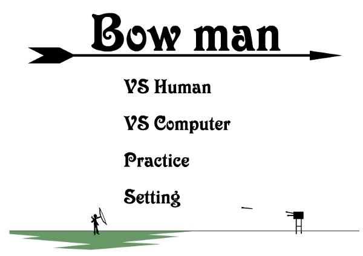
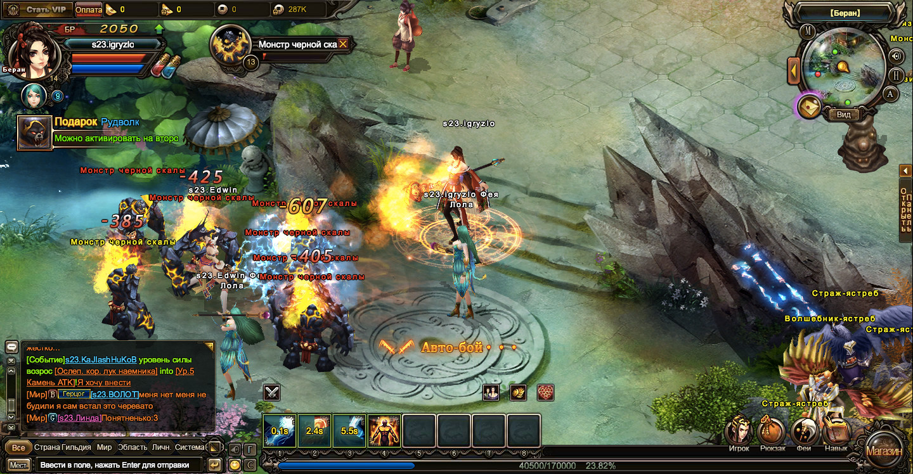

Появление и исчезновение (главная страница)
Что делало браузерные игры уникальными и яркими (главная страница)
Упадок Flash (страница 1)
Преданность сохранению цифровой истории(страница 1)
Создание в домашних условиях (страница 2)
Приведён пример одной из самых популярных игр (Змейка игра)
Считается, что первой видеоигрой, созданной исключительно для развлечения, была Tennis for Two 1958 года. Почти спустя четыре десятка лет первой браузерной игрой стала Club a Seal 1997 года. Хоть эти игры и сильно отличаются по жанру, они обе являются вехами, ставшими первыми в своём роде. Однако неизвестно, на самом ли деле они были первыми. Многие ранние игры были штучным товаром, их создавали, но не публиковали, или разбирали на запчасти после выпуска. Подобно фотоплёнке, история этого носителя не должна увянуть и погибнуть. В процессе архивирования консольных видеоигр приходится сталкиваться с закрытой проектной документацией, юридическими аспектами извлечения содержимого с исходных носителей, например, с картриджей при помощи специального оборудования. Для обогащения игрового процесса в консолях использовались специальные контроллеры или нецифровые объекты. Это усложняет сохранение консольных видеоигр. — «Keeping the Game Alive: Evaluating Strategies for the Preservation of Console Video Games» Это касается не только физических копий видеоигр, но и их цифровых выпусков. С учётом того, что некоторые цифровые игры пропали из цифровых магазинов и в них теперь невозможно сыграть (это относится к таким играм, как Scott Pilgrim vs. The World: The Game, After Burner Climax и P.T.), мы понимаем, что в цифровую эпоху ничто не вечно, если не относиться к архивированию серьёзно. Судьба этих пропавших игр или ранних потерянных видеоигр будет повторяться и мы продолжим терять ценные фрагменты истории. Начнёт исчезать Flash-контент, созданный за годы творчества и инноваций первых экспериментаторов. Жизнь Flash завершается, поэтому нужно предпринимать усилия к его сохранению.
Многие браузерные игры возникли благодаря технологии Flash, в то время это был малозатратный, но мощный инструмент для отображения мультимедийного контента в веб-браузерах. Flash состоял из двух частей: Flash — программа, в которой можно было создавать файлы Flash с помощью инструментов рисования и скриптинга, позволяющих изготавливать собственные анимации и игры, и Flash player — бесплатный плагин, в котором запускались творения, созданные в файлах Flash. Файлы Flash включали в себя широкий ассортимент игр, в которые можно было играть везде и всегда: с домашнего компьютера или в школьной библиотеке. Самыми привлекательными в этих играх были их простота и прямолинейный геймдизайн. В некоторых играх использовались максимально упрощённые базовые игровые механики и графика. Другие Flash-игры были более отполированными и экстравагантными. Как бы то ни было, основной целью таких игр было создание увлекательного игрового процесса, позволявшего играть в них снова и снова.

В качестве простого примера можно привести игру Bowman, в которой два лучника пытаются попасть друг в друга, стреляя стрелами из своих луков. Тот, кому первым удастся нанести достаточный урон противнику, выигрывает. В игре присутствовали природные препятствия и режим боя против компьютера или человека. Главное в игре — не её внешний вид, а базовая игровая механика, создающая увлекательный и понятный игровой процесс.
